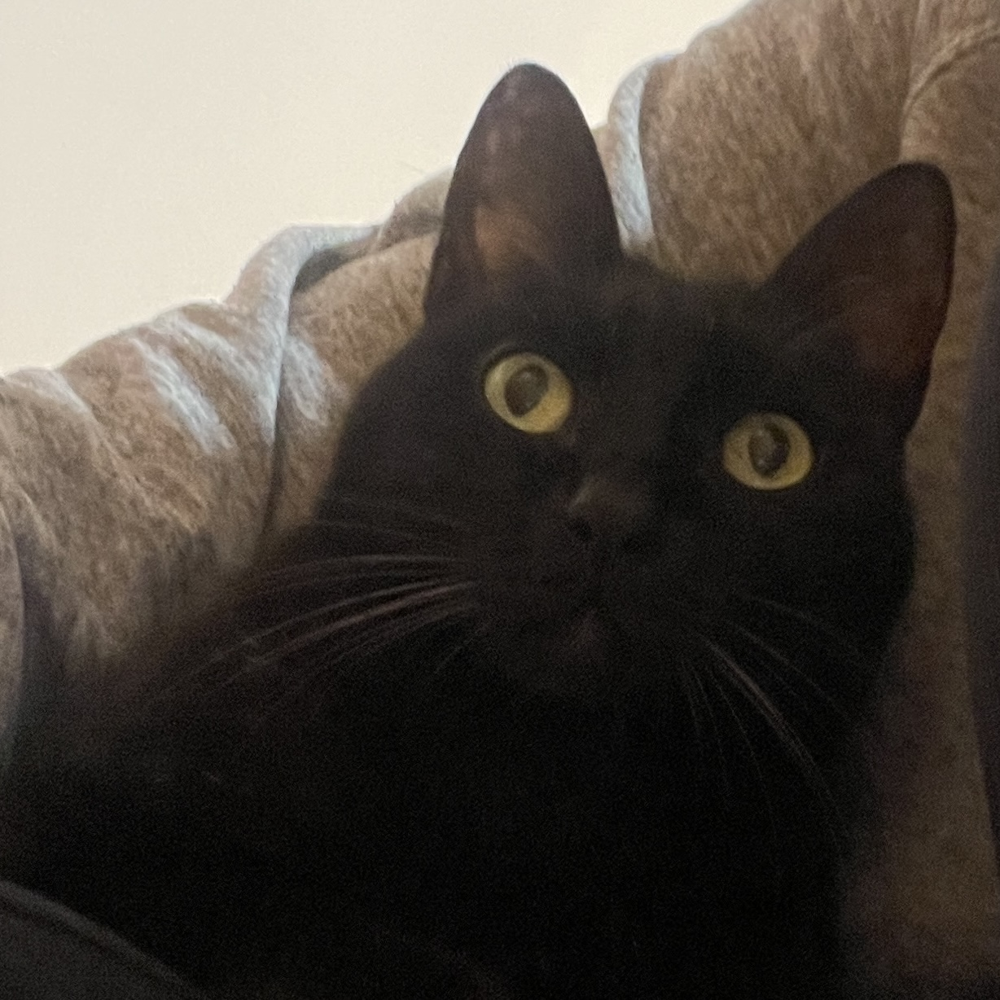
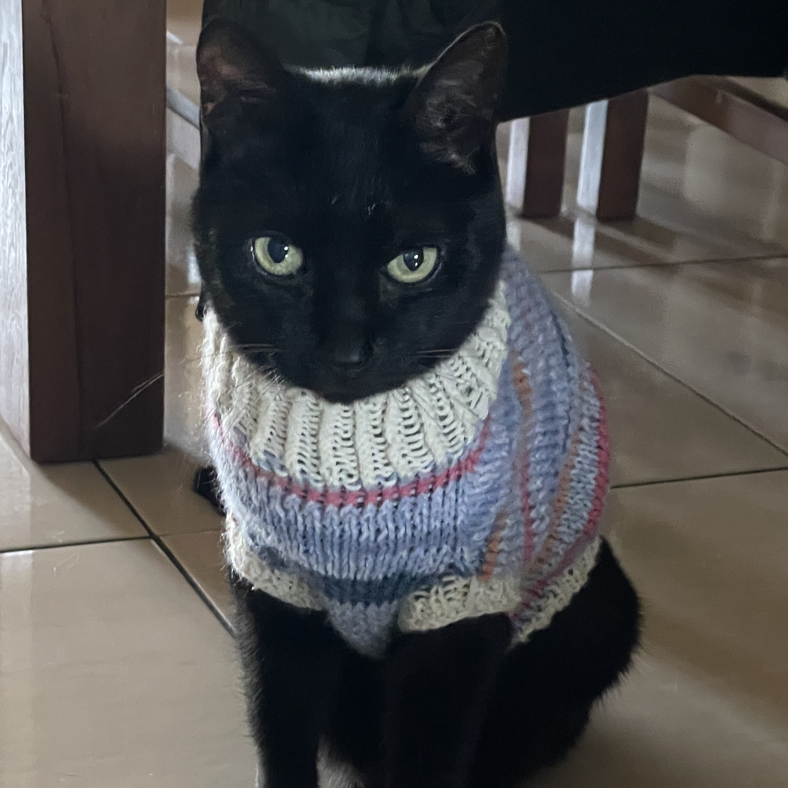

Portfolio / Research / CV
NLP · Dialogue Systems · Human-Robot Interaction
MSCS student at Institute of Science Tokyo
hu.c.873d [at] m.isct.ac.jp
I'm a Computer Science graduate from National Tsing Hua University and currently a master's student at Institute of Science Tokyo. My focus is on Natural Language Processing (NLP), dialogue systems, and human-robot interaction.
I am currently seeking new grad opportunities for 2027.
Developing a Spoken Dialogue System pipeline by integrating Automatic Speech Recognition outputs with LLMs. Focusing on optimizing data processing workflows and handling modality alignment challenges using PyTorch.
During my internship at Dykoo, I developed order-splitting algorithms using Python (Pandas) to enhance order picking and inventory tracking efficiency. I also built data processing workflows between Excel and Firebase and collaborated with the web team to connect backend logic to the SvelteKit and Google Cloud-based application.
I'm also a foodie and a cat lover! 🍰🐈⬛🫶

